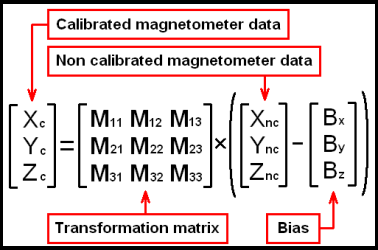
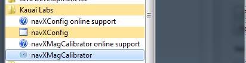
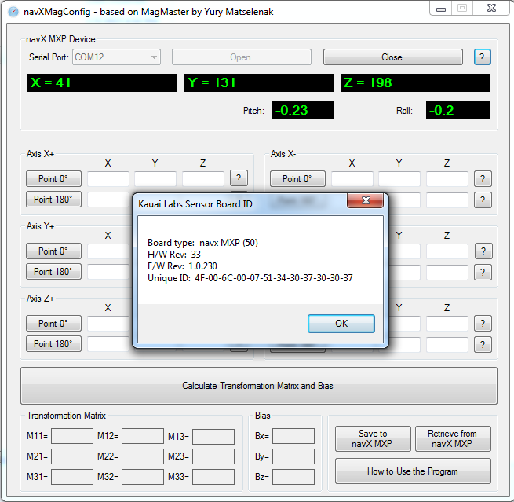
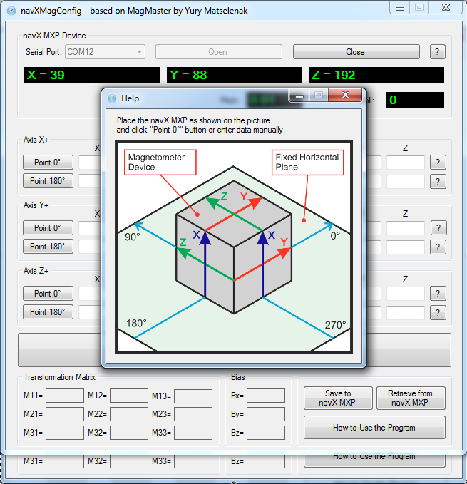
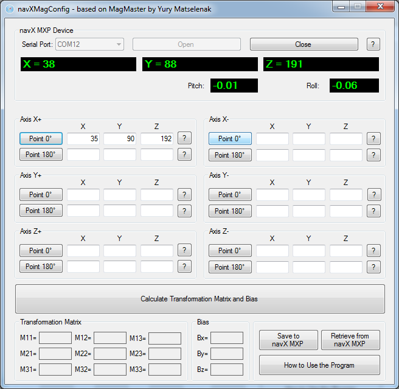
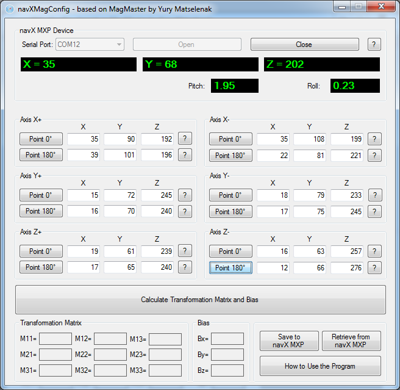
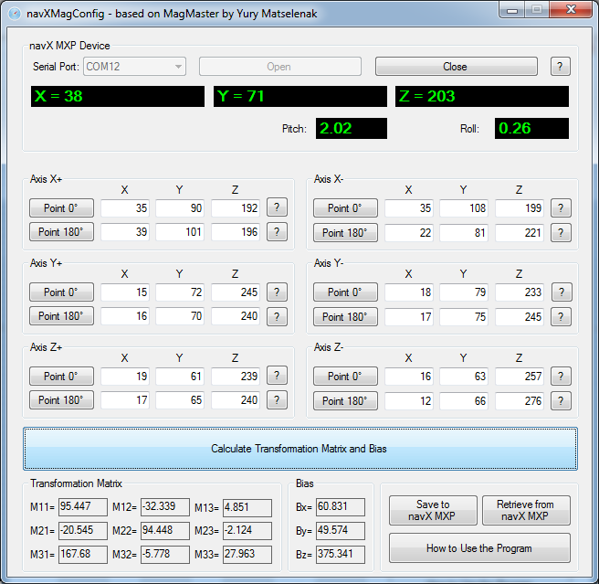
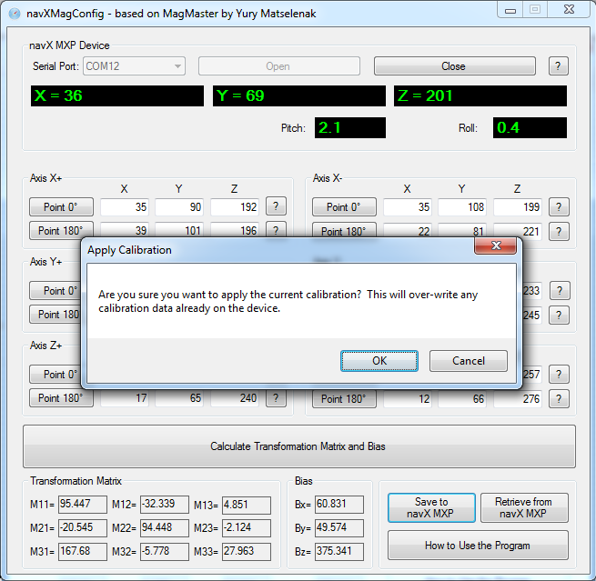

|
Calibration
OverviewThe navX MXP onboard sensors require calibration in order to yield optimal results. We highly recommend taking the time to understand this calibration process - successful calibration is vital to ensure optimal performance. Careful and accurate Magnetometer Calibration is crucial in order to yield valid compass heading, 9-axis heading and magnetic disturbance detection. Magnetometer CalibrationThe magnetometer calibration encompasses three areas: (a) hard-iron calibration, (b) soft-iron calibration and (c) magnetic disturbance calibration. Hard and soft-iron calibration allows the following equation to be used, and corrects for hard and soft-iron effects due to nearby ferrous metals and magnetic fields. This calibration is necessary in order to achieve valid compass heading readings:  In addition, using the same calibration data the strength of the Earth's Magnetic Field is determined. Whenever the data from the magnetometer indicates the current magnetic field differs from the calibrated Earth's Magnetic Field strength by more than the "Magnetic Disturbance Ratio", a Magnetic Anomaly is declared. Therefore, careful and accurate Magnetometer Calibration is crucial in order to yield valid compass heading, 9-axis heading and magnetic disturbance detection. Magnetometer Calibration can be accomplished with a single, simple calibration process through the use of the "navXMagCalibrator" tool. This tool is designed to run on a Windows computer, and communicate to the navX MXP via a USB cable. Installing the navXMagCalibrator
drivers/windows/vcp/ Run the VCP_V1.4.0_Setup.exe program within this directory to install the USB VCP driver. Go to Your installation directory. Typically, this is C:\Program Files (x86)\STMicroelectronics\Software\Virtual comport driver
Go to Your OS version directory (Win7 or Win8) Double click on dpinst_x86.exe if you are running a 32-bits OS version Double click on dpinst_amd64.exe if you are running a 64-bits OS version
Running the navXMagCalibratorStart the navXMagCalibratorFrom your windows start menu, first select the Kauai Labs program group, then click on the navXMagCalibrator item.  Connecting to the navX MXPOnce the navXMagCalibrator application is started, select the COM Port on which your navX MXP is connected, and press the "Open" button. If the navX MXP is successfully opened, you will see information about the navX MXP:  You will need to take 12 separate data points. Starting with the "X+" axis, click on the help button (labeled '?') to the right of the X+ controls. This will bring up an Axis orientation dialog. Carefully align the navX MXP such that it's X, Y an Z axes (see silkscreen on the navX MXP) are in the orientation shown in the dialog, relative to reference coordinates - for instance the edge of a square table.  Once you have aligned the device for this first reading, press the "Point 0 degrees" button to store the current magnetometer readings corresponding to this orientation.  Repeat this process for all data points, until all 12 sets of data points have been collected.  Next, press the "Calculate Transformation Matrix and Bias" button. You will see the results of this displayed in the "Transform Matrix" and "Bias" controls section on the bottom left of the navXMagCalibrator window. If the data points you have taken are invalid, you may receive a message indicating there are invalid data points. In this case, restart taking the data points, repeat the process above until you have a valid set of data points.  Once a set of valid data points has been acquired, press the "Save to NavX MXP" button to store the calibration data to the navX MXP. This calibration data is stored to the navX MXP's onboard flash memory, so this calibration data will be saved for future use. Once the data has been saved to the navX MXP, the navX MXP will immediately begin using the calibration data. At this point, the "compass heading", the "9-axis heading" and the "magnetic disturbance detection" features will begin working. These capabilities can be demonstrated via the navXMXPUI.  | |
► Sign in to add a comment